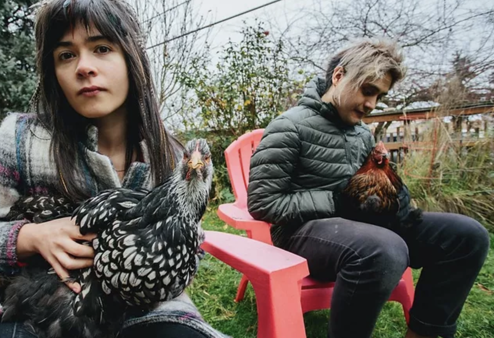

Northwest Orbit: Our Local Music Program
Monthly feature on SPACE 101.1 FM highlighting local bands you need to know. Interview and music.
Hosted by Phoebe.
May 2022: Tres Leches
Seattle duo Tres Leches stir Psyche, Punk, and Latin influences together to create a sound that is all their own.

April 2022: SuperCoze
Seattle's SuperCoze bring a blast of sunshine with their mix indie pop, surf rock, and heartfelt lyrics.
March 2022: Jason McCue
Seattle singer-songwriter Jason McCue combines intricate guitar finger-picking with distinct vocals for a modern twist on indie folk.

February 2022: Fretland
From Snohomish, WA, Fretland beautifully blends Americana, Indie Folk, and Country.

SPACE 101.1 LPFM is a service of Sand Point Arts and Cultural Exchange (SPACE). Funding, facilitating and promoting arts and cultural uses of Magnuson Park for the public.
SPACE is a 501(c)(3), EIN 91-1712171.
Powered in part with the support of
Seattle Parks and Recreation